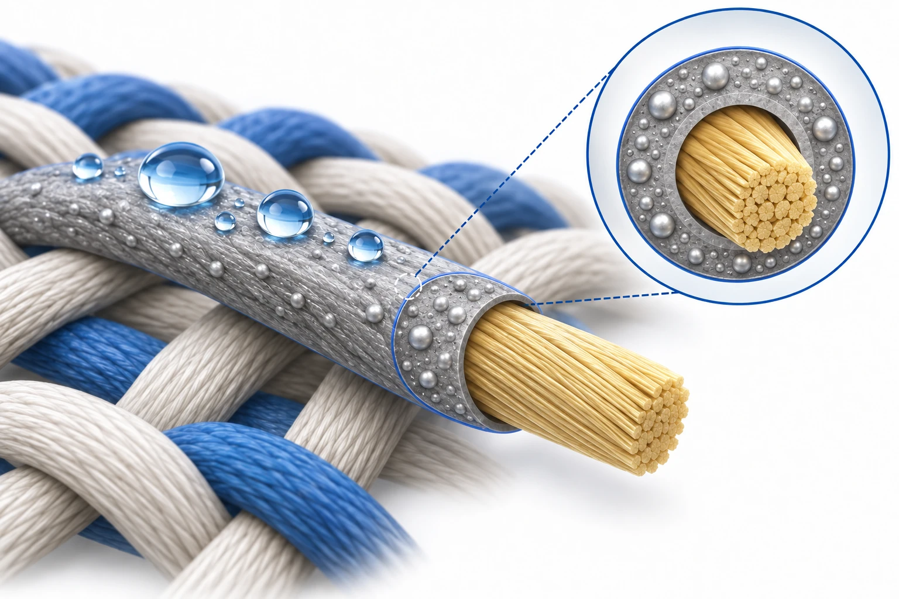

Overview
This study makes a waterproof, self-cleaning conductive fiber for textile interconnects by coating Kevlar with a silver nanoparticle (Ag NP) and poly(styrene-block-butadiene-block-styrene) (SBS) composite and capping it with a fluorinated self-assembled monolayer (SAM). It is a study by researchers at the School of Electrical and Electronic Engineering, Yonsei University, ETH Zürich and the Korea Institute of Science and Technology (KIST), with Jungmok Seo (then at KIST), who now leads the BLISS Lab at Yonsei University, as one of two corresponding authors. The fiber had a resistance of 0.11 Ω/cm, and with a 1H,1H,2H,2H-perfluorodecanethiol (PFDT) monolayer its resistance stayed within 0.11-0.28 Ω/cm after 20 washing cycles, while an untreated fiber rose to 11.44 Ω/cm.
Background
Moisture and contamination can cause electrical breakdown of textile devices and their interconnections, and wet electronic textiles can also shock the user. The authors note that multilayer encapsulation adds thickness and mechanical mismatch, that water-repellent fluorinated fabric coatings were applied to nonconductive fabrics, and that a wash-durable conductive polymer complex had a resistance of 1.9 MΩ/cm, too high for advanced E-textile applications. Their earlier Ag-polymer nanocomposite fibers were conductive and durable but could be wetted and lose conductivity.
Design and approach
A commercial multifilament Kevlar fiber (Grade I K49, 100D), chosen for its high modulus, is coated with SBS and soaked in silver trifluoroacetate (CF3COOAg, 20 wt % in ethanol) for 20 min; the absorbed Ag+ ions are reduced with hydrazine hydrate, and this cycle is repeated eight times. The Ag NP clusters roughen the surface, and a SAM is then vapor-deposited at 50 °C for 2 h and annealed at 80 °C for 30 min. Four SAM reagents with different head groups and chain lengths were compared: 1-decanethiol (DT), 1H,1H,2H,2H-perfluorohexanethiol (PFHT), 1H,1H,2H,2H-perfluorodecyltrichlorosilane (FDTS) and PFDT. The combination of roughness and low surface energy is intended to repel water and protect the Ag NPs from oxidation.

AI-generated concept showing the roles of a Kevlar support fiber, Ag–SBS conductive coating and PFDT surface treatment. Gray denotes the conductive coating, not a thick waterproof encapsulation.
Generated for this library to illustrate the design; it is not a figure from the paper and does not show measured data.
How it was evaluated
The fibers were characterized by electron microscopy with energy-dispersive spectroscopy, thermogravimetric analysis, atomic force microscopy, contact angle measurement, infrared spectroscopy, X-ray photoelectron spectroscopy and X-ray diffraction. Resistance was tracked during submersion in water and in diluted nitric acid at pH 3, during 150° folding cycles and during laundry cycles of fibers woven or sewn into fabric. Function was tested by lighting a light-emitting diode (LED) through fibers immersed in water, by rhodamine 6G staining, dust and ash removal, everyday liquids on coated canvas textile, and AATCC 118, 130 and 193 textile test methods.
Key results
After eight absorption and reduction cycles, the fiber resistance was 0.11 Ω/cm, and the Ag content measured by thermogravimetry rose from 61.4 to 83.9 wt % with increasing cycles. The coating changed the diameter from 0.2 to 0.3 mm and the weight from 0.15 to 0.3 g/m, and the Ag NPs raised the root-mean-square roughness from 0.675 to 1.171 μm.
All four SAMs made the coated Kevlar fabric hydrophobic (water contact angle over 90°), but only PFDT gave a contact angle over 150°. The thiol SAMs shifted the Ag binding energy more than the silane FDTS, which the authors relate to denser, more stable monolayers on Ag. In water and acid, the fluorine-terminated SAMs limited the resistance increase, with PFDT showing the least change. In pH 3 nitric acid, the resistance of the untreated fiber rose from 0.11 to 12.8 Ω/cm after 60 min, and after 1 h only the untreated fiber showed Ag oxide peaks at 32.1°, 57.4°, 67.4°, 74.4° and 76.6° in X-ray diffraction.
In the underwater LED test, the LED connected through the untreated fiber dimmed markedly after 4 h, whereas the PFDT-treated fiber kept the LED bright for longer. The PFDT-treated fiber showed no rhodamine 6G fluorescence after dipping, shed ash with a single water droplet without residue, and the coated textile beaded milk, coffee, orange juice and wine.
Resistance increased only from 0.11 to 0.15 Ω/cm after 10,000 folds at 150°. After 20 washing cycles (30 min each with a magnetic stirrer at 600 rpm), the untreated fiber rose from 0.11 to 11.44 Ω/cm, reported as a 10 400% increase, and was physically damaged by swelling, whereas the PFDT-treated fiber changed from 0.11 to 0.28 Ω/cm. In AATCC 118 the fabric repelled oil, milk, coffee, wine and orange juice with a contact angle of about 150°, AATCC 130 showed removal of oil stains by washing, and AATCC 193 showed repellency to water/isopropyl alcohol solutions.
Related research
Highly stretchable electric circuits from a composite material of silver nanoparticles and elastomeric fibres
The authors cite this study for the ion-dipole interaction between trifluoroacetate anions and the alcoholic solvent that carries the silver precursor into the SBS polymer. Here the Ag NP-SBS composite is formed as a coating between Kevlar filaments and is then capped with a fluorinated monolayer for wet operation.
Abstract-based introductionRESEARCH NEWS
Research in the news
Unverified candidates and access limits (1)
Unverified candidate · Volume 10 Issue 42 | ACS Applied Materials & Interfaces ↗
Sources used in this summary
This summary is based on the publisher PDF of the article, including the figure legends and experimental section; the Supporting Information was not reviewed.